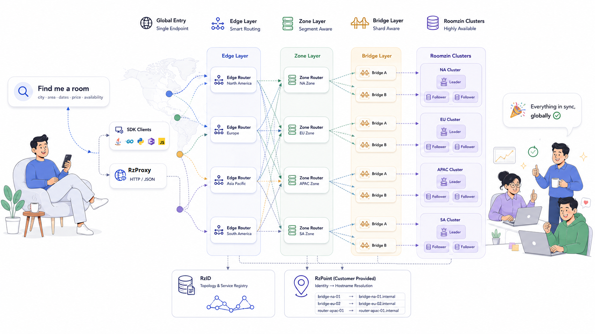

How Roomzin delivers predictable latency at global scale

SDK / RzProxy → Edge Router → Zone Router → RzBridge → Roomzin Shard
Generic search engines optimize for text relevance. Transactional databases optimize for ACID compliance with flexible schemas. Caches optimize for repeated read patterns.
Booking inventory combines availability, pricing, room types, policies, dates, and geography in every request. Each query is a high-dimensional filter that must be consistent—overbooking is unacceptable. This workload is not well-served by general-purpose systems without substantial application-layer complexity.
Roomzin is purpose-built for this domain. The architecture that follows is a direct consequence of these characteristics.
One logical inventory service. Distributed underneath.
Application never knows which zone, shard, or node handled the request
SDKs — Java, Go, Python, C#, Node.js. Connect directly to Edge Routers. Native binary protocol, connection pooling.
RzProxy — HTTP/JSON proxy for legacy platforms. Provides Prometheus metrics. Deploy independently, scale horizontally.
RzRouter — Single binary, two modes:
Routers maintain synchronized routing tables. Routing happens directly in the data path. No external proxy required.
RzBridge — Shard-aware connector.
Roomzin — In-memory inventory engine.
RzID — Lightweight service registry. Components register and send heartbeats. Maintains topology — which shard owns which segments. Not on request hot path.
RzPoint — Customer-provided HTTP service. Resolves logical service identities to hostnames. Works with any infrastructure (VM, K8s, cloud).
Storage, routing, and discovery are independent. Each scales without affecting others.
Application sees one endpoint. Zones, shards, and node failures are transparent.
RzPoint decouples logical identities from physical infrastructure. Works with VMs, containers, or cloud.
Every architectural choice follows from the characteristics of booking inventory search.
Each shard is a Raft-based cluster. Bridges handle routing into the shard.
RzBridge is shard-aware. It knows which Roomzin nodes belong to the shard and which node is currently the leader. Writes go to the leader. Reads go to an appropriate follower. Routers above the bridge do not need to know the internal topology.
Roomzin reuses mature distributed systems components rather than reinventing consensus or networking.
CNCF-graduated consensus implementation. Same reliability as etcd. Single-digit ms leader election.
Async runtime with custom thread pool configuration. 10k+ concurrent connections per node.
Encrypted, multiplexed transport for internal Raft communication. Avoids head-of-line blocking.
Data is partitioned into logical segments that execute independently on CPU cores.
Traditional blocking request/response limits throughput. Roomzin uses independent streams.
Roomzin makes intentional trade-offs. These are documented, not hidden.
Maximum 24 boolean attributes per property
Booking systems rarely require hundreds of searchable boolean attributes. This limit allows all attributes to fit in a single 24-bit integer, enabling constant-time filtering.
Observable engineering outcomes from the architecture described above.
Design Philosophy
Roomzin is intentionally specialized. It trades general-purpose flexibility for predictable performance on booking workloads. Every architectural decision—from fixed schemas and bitmap filtering to segment-based parallelism and topology-aware routing—serves that single objective.
The platform handles global distribution. The engine handles inventory search. Together they deliver deterministic latency at any scale.
Run your own benchmarks against real booking inventory data.